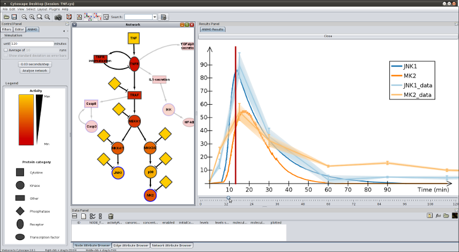
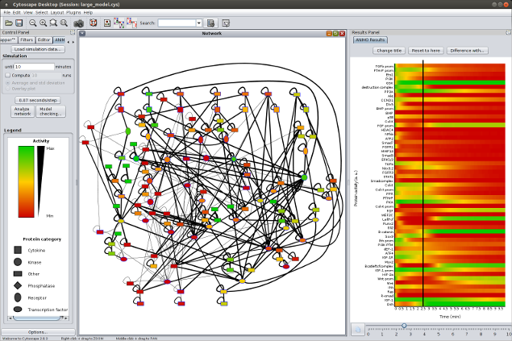

|
What is ANIMO? ANIMO (Analysis of Networks with Interactive MOdeling) is a tool for modeling biological signaling networks. It provides much-needed computational support to the understanding of signaling networks: the general approach is based on a notion of serious game, where the user "plays" with the topology of a network to get a better grasp of its inner workings. The aim is to extend and improve existing network topologies by fitting them to experimental time series of protein activity data. How does it work? The user interacts with the Cytoscape-based interface, drawing a network topology where nodes represent reactants and arrows represent reactions. In particular, each node represents the activity level of a reactant, i.e. the amount of active molecules with respect to the total molecules of the same species contained in a single cell. These activity levels change dynamically, being updated by the occurrence of reactions directly influencing them. The speed of a reaction is in turn influenced by the activities of the participating reactants: this generates a dynamic system which is modeled under the hood with Timed Automata, and analyzed with the UPPAAL model checker. Time dynamics of the model are shown to the user in a graph, and reflected by the coloring of the network nodes to represent reactnat activities in any chosen instant.
ANIMO runs under Windows, Mac OSX and GNU/Linux distributions and is free for academical use. For commercial uses, please contact us at
A series of screenshots and a video are available to give an idea of what the tool looks like. In order to install and run the tool, please read the installation guide. Any questions and/or comments are welcome and can be sent to   About ANIMO The project aims at producing a framework to quantitatively model the interactions happening inside biological cells. In particular, the current target is the dynamic evolution of signaling pathways, which are the mechanisms underlying the cellular response to external signals such as growth and death factors. The formal foundation of the framework rests on Timed Automata, and models are checked against experimental data thanks to the powerful tool UPPAAL. The Timed Automata formalism is hidden behind a user interface based on Cytoscape, a widely spread program used in modeling biological interactions. This makes it easy for the molecular biologist to test and formulate hypotheses about a specific signaling network without needing any knowledge about the underlying formal model. |
 .
.